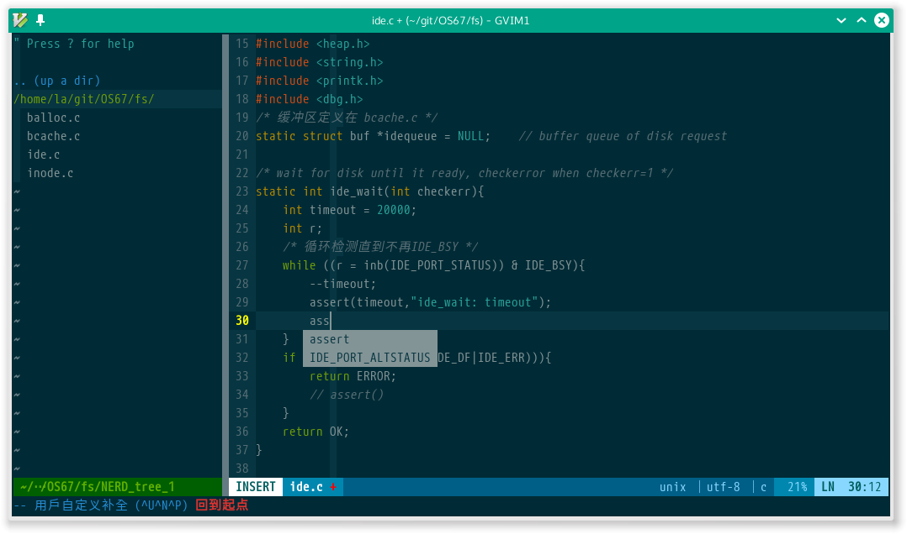

Vim 插件折腾记录
Contents
Vim 插件折腾记录#
提示
这是一篇迁移自 Jekyll 的文章，如有格式问题，可到 ⛺SilverRainZ/bullet 反馈
今天考完计组, 有一个空闲的下午, 于是决定来配一配 vim, 装了几个插件, 记录如下:
首先我把本来 .vimrc 里所有对于 Windows 的特殊配置都删除了, 反正现在也不怎么用 Windows,
同时维护兼容两个平台的配置文件实在是麻烦.
fcitx.vim#
这个是依云写的插件, 用来在普通模式关闭输入法, 插入模式自动恢复上次的输入法状态. (当然你用的得是 fctix)
从这里可以下载: fcitx.vim.
这个插件的安装很容易, 最简单的方式是直接把 so/fctix.vim
放到 .vim/plugin 目录下就好, 最好在 .vimrc 里加上一句: set ttimeoutlen=100
如果想要启用 Python 支持的话, 要加入一个环境变量:
export FCITX_SOCKET=/tmp/fcitx-remote.sock
不过我试了试发现报错: socket connection error, 就不去用它了.
Vundle#
神器, 用来管理插件的插件, 可以从 GitHub, 其他 Git 服务器或者本地的 Git 目录获取并安装插件,
把 gmarik/Vundle.vim clone 到 .vim 下,
在 .vimrc 里添加如下内容:
set nocompatible " be iMproved, required
filetype off " required
" set the runtime path to include Vundle and initialize
set rtp+=~/.vim/bundle/Vundle.vim
call vundle#begin()
" alternatively, pass a path where Vundle should install plugins
"call vundle#begin('~/some/path/here')
" let Vundle manage Vundle, required
Plugin 'gmarik/Vundle.vim'
" All of your Plugins must be added before the following line
call vundle#end() " required
filetype plugin indent on " required
" To ignore plugin indent changes, instead use:
"filetype plugin on
"
" Brief help
" :PluginList - lists configured plugins
" :PluginInstall - installs plugins; append `!` to update or just :PluginUpdate
" :PluginSearch foo - searches for foo; append `!` to refresh local cache
" :PluginClean - confirms removal of unused plugins; append `!` to auto-approve removal
"
" see :h vundle for more details or wiki for FAQ
" Put your non-Plugin stuff after this line
然后重启 :PluginInstall, 就安装好了, 如果想要添加新的插件, 在 Plugin '...'
那一句之后添加 Plugin '插件地址' 再 :PluginInstall 一下就好了.
对于在 GitHub 上的插件地址, 可以直接写 owner/repo-name 这样的形式.
PowerLine#
漂亮的状态栏插件
在.vimrc 相应位置里加一句 Plugin 'Lokaltog/vim-powerline',
再 :PluginInstall, 加上如下配置:
" powerline
set nocompatible " 不兼容 vi
set t_Co=256 " 终端颜色
set laststatus=2 " 显示状态栏
set encoding=utf8
let g:Powerline_symbols = 'compatible'
" 值为'fancy'的话,状态栏会有好看的箭头, 但是要打过补丁的字体, 太麻烦了
Nerdtree#
文件浏览插件, 还是用 Vundle 安装.
" A tree explorer plugin for vim.
Plugin 'scrooloose/nerdtree'
" nerdtree
map <C-n> :NERDTreeToggle<CR>
YouCompleteMe#
据说是最好的 C/C++ 补全插件? 这个安装略波折. 首先用 Vundle 安装:
" A code-completion engine for Vim
Plugin 'Valloric/YouCompleteMe'
安装时提示 YouCompleteMe unavailable: requires Vim compiled with Python 2.x support.
即我这个版本的 vim 编译时没有 Python 2 的支持, 可以用 vim --version 查看是否开启,
没有开启的话会有 -python 这一项.
openSUSE 默认源里的 vim 是没有编译入 Python 2 支持的, 所以得手动编译.
(后来知道在 editor 源里有vim)
首先从 vim-7.4.tar.bz2 下载 vim 7.4 的源码, 解压.
删除原来的 vim
$ ~ zypper rm gvim
$ ~ zypper rm vim
先安装各种依赖包:
$ ~ zypper in python-devel
$ ~ zypper in ruby-devel
$ ~ zypper in lua-devel
$ ~ zypper in ncurses-devel
$ ~ zypper in libx11-devel
编译:
$ ~ ./configure --with-features=huge \
--enable-rubyinterp \
--enable-pythoninterp \
--with-python-config-dir=/usr/lib64/python2.7/config \
--enable-perlinterp \
--with-x \
--enable-gui=gtk2 \
--enable-cscope \
--enable-luainterp \
--enable-perlinterp \
--enable-multibyte \
--prefix=/usr \
--enable-fail-if-missing
$ ~ make
$ ~ sudo make install
安装后就可以编译 YCM 了:
$ ~ zypper in llvm-clang cmake
$ ~ cd .vim/bundle/YouCompleteMe
$ ~ ./install.sh
安装完成.
截图一张:
如果你有任何意见，请在此评论。 如果你留下了电子邮箱，我可能会通过 回复你。